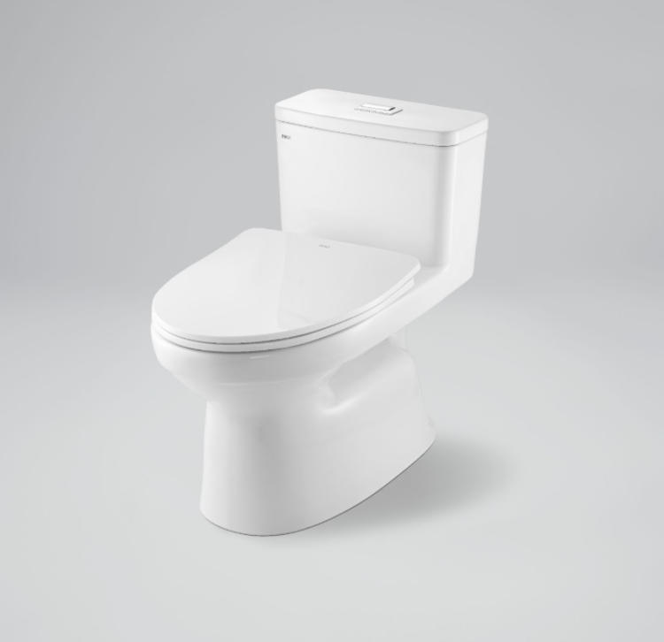
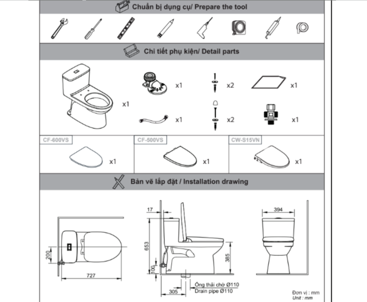

Bồn cầu 1 khối AC-969VN-2 được thiết kế liền khối với cơ chế xả nhấn tối ưu, mang gam màu trắng trang nhã, tạo cảm giác sạch sẽ và tinh tế cho không gian phòng tắm. Sản phẩm được sản xuất từ chất liệu sứ cao cấp, bền bỉ, tích hợp công nghệ tiên tiến giúp bề mặt luôn sáng bóng, hạn chế bám bẩn và dễ vệ sinh.Với kích thước gọn gàng và thiết kế hài hòa, bồn cầu 1 khối INAX AC-969VN-2 dễ dàng phù hợp với nhiều không gian phòng tắm từ nhỏ đến lớn và đa dạng phong cách khác nhau, từ đơn giản đến hiện đại. Giá bồn cầu cạnh tranh, độ tiện nghi và khả năng đáp ứng tốt các nhu cầu cơ bản giúp mẫu sản phẩm này được rất nhiều khách hàng tin tưởng và lựa chọn.Thiết kế thông minh của bồn cầu 1 khối AC-969VN-2Thân bồn AC-969VN-2 được thiết kế liền mạch với két nước, tạo thành một khối chắc chắn, thẩm mỹ và dễ vệ sinh.Sử dụng nắp mỏng đóng êm CF-600VS giúp hạn chế tiếng ồn khi sử dụng, đặc biệt là vào ban đêm. Đồng thời nắp đóng êm còn giúp tăng tuổi thọ sản phẩm nhờ vào việc hạn chế va đập mạnh gây sứt mẻ bề mặt sứ.Tính năng nổi bật của bồn cầu 1 khối AC-969VN-2Sản phẩm ứng dụng công nghệ men sứ Aqua Ceramic tiên tiến: Đây là công nghệ độc quyền của INAX, giúp duy trì độ trắng sáng bền đẹp lên tới 100 năm, đồng thời ngăn ngừa bám bẩn trong quá trình sử dụng và hỗ trợ vệ sinh dễ dàng hơn.Công nghệ xả Vortex tạo xoáy mạnh mẽ: Cơ chế xả từ phía trên xuống tạo ra dòng nước mạnh mẽ, cuốn trôi chất bẩn nhanh chóng, giữ lòng bồn cầu luôn sạch sẽ. Lực xoáy còn hỗ trợ giảm bám cặn, hạn chế vi khuẩn sinh sôi và giữ bồn cầu sạch sẽ lâu hơn, đồng thời vận hành êm ái và tiết kiệm nước.Hệ thống xả siphon 6.0L/4.0L: Bồn cầu được trang bị hai chế độ xả riêng biệt cho tiểu tiện và đại tiện, giúp điều chỉnh lượng nước phù hợp từng nhu cầu, vừa đảm bảo hiệu quả làm sạch vừa giúp tiết kiệm nước.Video giới thiệu công nghệ Aqua Ceramic độc quyền của INAXBồn cầu 1 khối INAX AC-969VN-2 có thể kết hợp hài hòa với các mẫu chậu rửa và lavabo cùng thương hiệu như chậu rửa dương bàn AL-2398V, lavabo âm bàn AL-2298V, chậu rửa treo tường L-312V. Sự kết hợp này mang đến một tổng thể đồng nhất về kiểu dáng và chất liệu, góp phần nâng cao tính thẩm mỹ cho không gian phòng tắm của bạn.Bản vẽ bồn cầu 1 khối AC-969VN-2Bản vẽ bồn cầu 1 khối AC-969VN-2Hướng dẫn lắp đặt bồn cầu 1 khối AC-969VN-2Xem Hướng dẫn lắp đặt sản phẩm tại đây.Thông số kỹ thuậtChất liệuSứKiểu dáng1 khối liên kết giữa thân cầu và két nướcKích thước727 x 394 x 653 (mm) (Dài x Rộng x Cao)Tính năng & Công nghệ- Công nghệ men sứ Aqua Ceramic: Giữ trắng sáng đến 100 năm, chống bám bẩn, dễ vệ sinh - Xả Vortex tạo xoáy mạnh: Cuốn trôi chất bẩn nhanh, hạn chế cặn và vi khuẩn, vận hành êm, tiết kiệm nước - Hệ thống xả siphon với 6L (đại tiện)/ 4L (tiểu tiện) giúp làm sạch hiệu quả, tiết kiệm nước - Chống bám cặn và bụi bẩn, không gây ố vàng, độ bền caoThương hiệuINAXThiết kế- Thiết kế 1 khối mang lại sự chắc chắn, thẩm mỹ và thuận tiện trong việc dọn vệ sinh - Nắp đóng êm, mỏng nhẹ, giúp giảm tiếng ồn khi sử dụng và hạn chế va đập - Phù hợp với nhiều không gian và phong cách nhà tắm khác nhauMàu sắcTrắngKhác- Gợi ý sản phẩm đi kèm: chậu rửa AL-2398V, AL-2298V, L-312V - Chế độ bảo hành: Phần sứ được bảo hành 10 năm, phụ kiện được bảo hành 2 năm theo chính sách của INAX - Miễn phí hỗ trợ, tư vấn về sản phẩm và dịch vụ của INAX một cách nhanh chóng. - Hotline tư vấn và bảo hành: 18006633
Bồn cầu 1 khối AC-969VN-2
Bàn cầu thương hiệu INAX.
Đã cập nhật danh sách yêu thích.
DANH MỤC: Bàn cầu
MÃ SẢN PHẨM: AC-969VN-2
DEPTH: 727mm
HEIGHT: 653mm
WIDTH: 394mm
Bồn cầu 1 khối AC-969VN-2 được thiết kế liền khối với cơ chế xả nhấn tối ưu, mang gam màu trắng trang nhã, tạo cảm giác sạch sẽ và tinh tế cho không gian phòng tắm. Sản phẩm được sản xuất từ chất liệu sứ cao cấp, bền bỉ, tích hợp công nghệ tiên tiến giúp bề mặt luôn sáng bóng, hạn chế bám bẩn và dễ vệ sinh.Với kích thước gọn gàng và thiết kế hài hòa, bồn cầu 1 khối INAX AC-969VN-2 dễ dàng phù hợp với nhiều không gian phòng tắm từ nhỏ đến lớn và đa dạng phong cách khác nhau, từ đơn giản đến hiện đại. Giá bồn cầu cạnh tranh, độ tiện nghi và khả năng đáp ứng tốt các nhu cầu cơ bản giúp mẫu sản phẩm này được rất nhiều khách hàng tin tưởng và lựa chọn.Thiết kế thông minh của bồn cầu 1 khối AC-969VN-2Thân bồn AC-969VN-2 được thiết kế liền mạch với két nước, tạo thành một khối chắc chắn, thẩm mỹ và dễ vệ sinh.Sử dụng nắp mỏng đóng êm CF-600VS giúp hạn chế tiếng ồn khi sử dụng, đặc biệt là vào ban đêm. Đồng thời nắp đóng êm còn giúp tăng tuổi thọ sản phẩm nhờ vào việc hạn chế va đập mạnh gây sứt mẻ bề mặt sứ.Tính năng nổi bật của bồn cầu 1 khối AC-969VN-2Sản phẩm ứng dụng công nghệ men sứ Aqua Ceramic tiên tiến: Đây là công nghệ độc quyền của INAX, giúp duy trì độ trắng sáng bền đẹp lên tới 100 năm, đồng thời ngăn ngừa bám bẩn trong quá trình sử dụng và hỗ trợ vệ sinh dễ dàng hơn.Công nghệ xả Vortex tạo xoáy mạnh mẽ: Cơ chế xả từ phía trên xuống tạo ra dòng nước mạnh mẽ, cuốn trôi chất bẩn nhanh chóng, giữ lòng bồn cầu luôn sạch sẽ. Lực xoáy còn hỗ trợ giảm bám cặn, hạn chế vi khuẩn sinh sôi và giữ bồn cầu sạch sẽ lâu hơn, đồng thời vận hành êm ái và tiết kiệm nước.Hệ thống xả siphon 6.0L/4.0L: Bồn cầu được trang bị hai chế độ xả riêng biệt cho tiểu tiện và đại tiện, giúp điều chỉnh lượng nước phù hợp từng nhu cầu, vừa đảm bảo hiệu quả làm sạch vừa giúp tiết kiệm nước.Video giới thiệu công nghệ Aqua Ceramic độc quyền của INAXBồn cầu 1 khối INAX AC-969VN-2 có thể kết hợp hài hòa với các mẫu chậu rửa và lavabo cùng thương hiệu như chậu rửa dương bàn AL-2398V, lavabo âm bàn AL-2298V, chậu rửa treo tường L-312V. Sự kết hợp này mang đến một tổng thể đồng nhất về kiểu dáng và chất liệu, góp phần nâng cao tính thẩm mỹ cho không gian phòng tắm của bạn.Bản vẽ bồn cầu 1 khối AC-969VN-2Bản vẽ bồn cầu 1 khối AC-969VN-2Hướng dẫn lắp đặt bồn cầu 1 khối AC-969VN-2Xem Hướng dẫn lắp đặt sản phẩm tại đây.Thông số kỹ thuậtChất liệuSứKiểu dáng1 khối liên kết giữa thân cầu và két nướcKích thước727 x 394 x 653 (mm) (Dài x Rộng x Cao)Tính năng & Công nghệ- Công nghệ men sứ Aqua Ceramic: Giữ trắng sáng đến 100 năm, chống bám bẩn, dễ vệ sinh - Xả Vortex tạo xoáy mạnh: Cuốn trôi chất bẩn nhanh, hạn chế cặn và vi khuẩn, vận hành êm, tiết kiệm nước - Hệ thống xả siphon với 6L (đại tiện)/ 4L (tiểu tiện) giúp làm sạch hiệu quả, tiết kiệm nước - Chống bám cặn và bụi bẩn, không gây ố vàng, độ bền caoThương hiệuINAXThiết kế- Thiết kế 1 khối mang lại sự chắc chắn, thẩm mỹ và thuận tiện trong việc dọn vệ sinh - Nắp đóng êm, mỏng nhẹ, giúp giảm tiếng ồn khi sử dụng và hạn chế va đập - Phù hợp với nhiều không gian và phong cách nhà tắm khác nhauMàu sắcTrắngKhác- Gợi ý sản phẩm đi kèm: chậu rửa AL-2398V, AL-2298V, L-312V - Chế độ bảo hành: Phần sứ được bảo hành 10 năm, phụ kiện được bảo hành 2 năm theo chính sách của INAX - Miễn phí hỗ trợ, tư vấn về sản phẩm và dịch vụ của INAX một cách nhanh chóng. - Hotline tư vấn và bảo hành: 18006633
DANH MỤC: Bàn cầu
MÃ SẢN PHẨM: AC-969VN-2
DEPTH: 727mm
HEIGHT: 653mm
WIDTH: 394mm